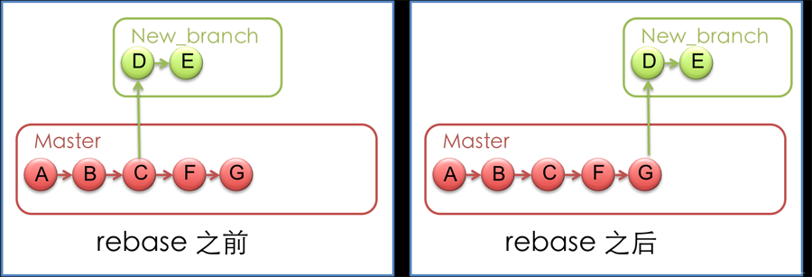
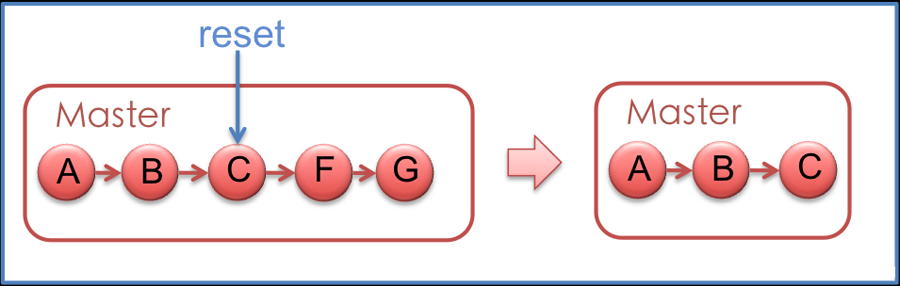
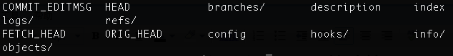
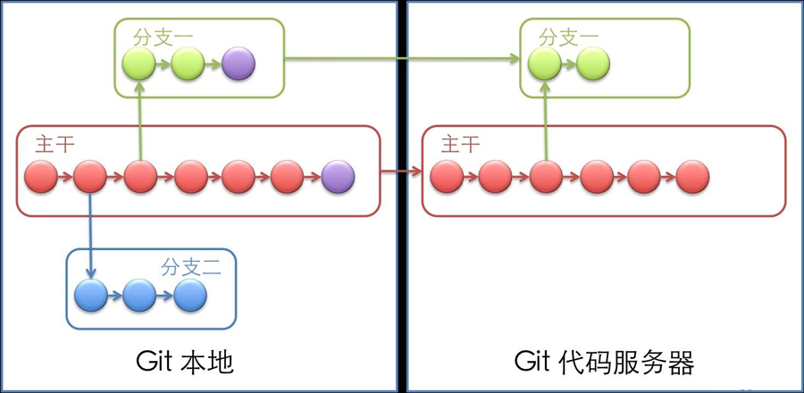
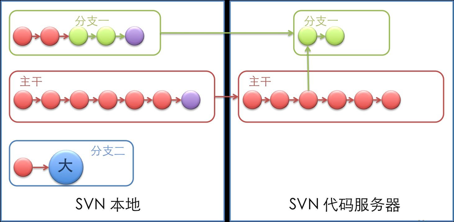

Git 常用命令详解（二）
Git 是一个很强大的分布式版本管理工具，它不但适用于管理大型开源软件的源代码（如：linux kernel），管理私人的文档和源代码也有很多优势（如：wsi-lgame-pro）
Git 的更多介绍，请参考我的上一篇博客：Git 版本管理工具
一、 Git 命令初识
在正式介绍Git命令之前，先介绍一下Git 的基本命令和操作，对Git命令有一个总体的认识
示例：从Git 版本库的初始化，通常有两种方式：
1）git clone：这是一种较为简单的初始化方式，当你已经有一个远程的Git版本库，只需要在本地克隆一份
例如：git clone git://github.com/someone/some_project.git some_project
上面的命令就是将'git://github.com/someone/some_project.git'这个URL地址的远程版本库，完全克隆到本地some_project目录下
2）git init 和 git remote：这种方式稍微复杂一些，当你本地创建了一个工作目录，你可以进入这个目录，使用'git init'命令进行初始化；Git以后就会对该目录下的文件进行版本控制，这时候如果你需要将它放到远程服务器上，可以在远程服务器上创建一个目录，并把可访问的URL记录下来，此时你就可以利用'git remote add'命令来增加一个远程服务器端，
例如：git remote add origin git://github.com/someone/another_project.git
上面的命令就会增加URL地址为'git: //github.com/someone/another_project.git'，名称为origin的远程服务器，以后提交代码的时候只需要使用 origin别名即可
1) 远程仓库相关命令
检出仓库： $ git clone git://github.com/jquery/jquery.git
查看远程仓库：$ git remote -v
添加远程仓库：$ git remote add [name] [url]
删除远程仓库：$ git remote rm [name]
修改远程仓库：$ git remote set-url --push [name] [newUrl]
拉取远程仓库：$ git pull [remoteName] [localBranchName]
推送远程仓库：$ git push [remoteName] [localBranchName]
*如果想把本地的某个分支test提交到远程仓库，并作为远程仓库的master分支，或者作为另外一个名叫test的分支，如下：
$git push origin test:master // 提交本地test分支作为远程的master分支
$git push origin test:test // 提交本地test分支作为远程的test分支2）分支(branch)操作相关命令
查看本地分支：$ git branch
查看远程分支：$ git branch -r
创建本地分支：$ git branch [name] ----注意新分支创建后不会自动切换为当前分支
切换分支：$ git checkout [name]
创建新分支并立即切换到新分支：$ git checkout -b [name]
删除分支：$ git branch -d [name] ---- -d选项只能删除已经参与了合并的分支，对于未有合并的分支是无法删除的。如果想强制删除一个分支，可以使用-D选项
合并分支：$ git merge [name] ----将名称为[name]的分支与当前分支合并
创建远程分支(本地分支push到远程)：$ git push origin [name]
删除远程分支：$ git push origin :heads/[name] 或 $ gitpush origin :[name]
*创建空的分支：(执行命令之前记得先提交你当前分支的修改，否则会被强制删干净没得后悔)
$git symbolic-ref HEAD refs/heads/[name]
$rm .git/index
$git clean -fdx3）版本(tag)操作相关命令
查看版本：$ git tag
创建版本：$ git tag [name]
删除版本：$ git tag -d [name]
查看远程版本：$ git tag -r
创建远程版本(本地版本push到远程)：$ git push origin [name]
删除远程版本：$ git push origin :refs/tags/[name]
合并远程仓库的tag到本地：$ git pull origin --tags
上传本地tag到远程仓库：$ git push origin --tags
创建带注释的tag：$ git tag -a [name] -m 'yourMessage'
4) 子模块(submodule)相关操作命令
添加子模块：$ git submodule add [url] [path]
如：$git submodule add git://github.com/soberh/ui-libs.git src/main/webapp/ui-libs
初始化子模块：$ git submodule init ----只在首次检出仓库时运行一次就行
更新子模块：$ git submodule update ----每次更新或切换分支后都需要运行一下
删除子模块：（分4步走哦）
1) $ git rm --cached [path]
2) 编辑“.gitmodules”文件，将子模块的相关配置节点删除掉
3) 编辑“ .git/config”文件，将子模块的相关配置节点删除掉
4) 手动删除子模块残留的目录
5）忽略一些文件、文件夹不提交
在仓库根目录下创建名称为“.gitignore”的文件，写入不需要的文件夹名或文件，每个元素占一行即可，如
target
bin
*.db
三、 Git 命令详解
现在我们有了本地和远程的版本库，让我们来试着用用Git的基本命令：
git pull：从其他的版本库（既可以是远程的也可以是本地的）将代码更新到本地，例如：'git pull origin master'就是将origin这个版本库的代码更新到本地的master主枝，该功能类似于SVN的update
git add：是将当前更改或者新增的文件加入到Git的索引中，加入到Git的索引中就表示记入了版本历史中，这也是提交之前所需要执行的一步，例如'git add app/model/user.rb'就会增加app/model/user.rb文件到Git的索引中，该功能类似于SVN的add
git rm：从当前的工作空间中和索引中删除文件，例如'git rm app/model/user.rb'，该功能类似于SVN的rm、del
git commit：提交当前工作空间的修改内容，类似于SVN的commit命令，例如'git commit -m story #3, add user model'，提交的时候必须用-m来输入一条提交信息，该功能类似于SVN的commit
git push：将本地commit的代码更新到远程版本库中，例如'git push origin'就会将本地的代码更新到名为orgin的远程版本库中
git log：查看历史日志，该功能类似于SVN的log
git revert：还原一个版本的修改，必须提供一个具体的Git版本号，例如'git revert bbaf6fb5060b4875b18ff9ff637ce118256d6f20'，Git的版本号都是生成的一个哈希值
上面的命令几乎都是每个版本控制工具所公有的，下面就开始尝试一下Git独有的一些命令：
git branch：对分支的增、删、查等操作，例如'git branch new_branch'会从当前的工作版本创建一个叫做new_branch的新分支，'git branch -D new_branch'就会强制删除叫做new_branch的分支，'git branch'就会列出本地所有的分支
git checkout：Git的checkout有两个作用，其一是在不同的branch之间进行切换，例如'git checkout new_branch'就会切换到new_branch的分支上去；另一个功能是还原代码的作用，例如'git checkout app/model/user.rb'就会将user.rb文件从上一个已提交的版本中更新回来，未提交的内容全部会回滚
git rebase：用下面两幅图解释会比较清楚一些，rebase命令执行后，实际上是将分支点从C移到了G，这样分支也就具有了从C到G的功能

git reset：将当前的工作目录完全回滚到指定的版本号，假设如下图，我们有A-G五次提交的版本，其中C的版本号是 bbaf6fb5060b4875b18ff9ff637ce118256d6f20，我们执行了'git reset bbaf6fb5060b4875b18ff9ff637ce118256d6f20'那么结果就只剩下了A-C三个提交的版本

git stash：将当前未提交的工作存入Git工作栈中，时机成熟的时候再应用回来，这里暂时提一下这个命令的用法，后面在技巧篇会重点讲解
git config：利用这个命令可以新增、更改Git的各种设置，例如'git config branch.master.remote origin'就将master的远程版本库设置为别名叫做origin版本库，后面在技巧篇会利用这个命令个性化设置你的Git，为你打造独一无二的 Git
git tag：可以将某个具体的版本打上一个标签，这样你就不需要记忆复杂的版本号哈希值了，例如你可以使用'git tag revert_version bbaf6fb5060b4875b18ff9ff637ce118256d6f20'来标记这个被你还原的版本，那么以后你想查看该版本时，就可以使用 revert_version标签名，而不是哈希值了
Git 之所以能够提供方便的本地分支等特性，是与它的文件存储机制有关的。Git存储版本控制信息时使用它自己定义的一套文件系统存储机制，在代码根目录下有一个.git文件夹，会有如下这样的目录结构：

有几个比较重要的文件和目录需要解释一下：HEAD文件存放根节点的信息，其实目录结构就表示一个树型结构，Git采用这种树形结构来存储版本信息，那么HEAD就表示根；refs目录存储了你在当前版本控制目录下的各种不同引用（引用指的是你本地和远程所用到的各个树分支的信息），它有heads、remotes、stash、tags四个子目录，分别存储对不同的根、远程版本库、Git栈和标签的四种引用，你可以通过命令'git show-ref'更清晰地查看引用信息；logs目录根据不同的引用存储了日志信息。因此，Git只需要代码根目录下的这一个.git目录就可以记录完整的版本控制信息，而不是像SVN那样根目录和子目录下都有.svn目录。那么下面就来看一下Git与SVN的区别吧
四、 Git 与SVN 比较
SVN（Subversion）是当前使用最多的版本控制工具。与它相比较，Git 最大的优势在于两点：易于本地增加分支和分布式的特性。
下面两幅图可以形象的展示Git与SVN的不同之处：

------------

1）本地增加分支
图中Git本地和服务器端结构都很灵活，所有版本都存储在一个目录中，你只需要进行分支的切换即可达到在某个分支工作的效果
而SVN则完全不同，如果你需要在本地试验一些自己的代码，只能本地维护多个不同的拷贝，每个拷贝对应一个SVN服务器地址
举一个实际的例子：
使用SVN作为版本控制工具，当正在试图增强一个模块，工作做到一半，由于会改变原模块的行为导致代码服务器上许多测试的失败，所以并没有提交代码。
这时候假如现在有一个很紧急的Bug需要处理， 必须在两个小时内完成。我只好将本地的所有修改diff，并输出成为一个patch文件，然后回滚有关当前任务的所有代码，再开始修改Bug的任务，等到修改好后，在将patch应用回来。前前后后要完成多个繁琐的步骤，这还不计中间代码发生冲突所要进行的工作量。
可是如果使用Git， 我们只需要开一个分支或者转回到主分支上，就可以随时开始Bug修改的任务，完成之后，只要切换到原来的分支就可以优雅的继续以前的任务。只要你愿意，每一个新的任务都可以开一个分支，完成后，再将它合并到主分支上，轻松而优雅。
2）分布式提交
Git 可以本地提交代码，所以在上面的图中，Git有利于将一个大任务分解，进行本地的多次提交
而SVN只能在本地进行大量的一次性更改，导致将来合并到主干上造成巨大的风险
3）日志查看
Git 的代码日志是在本地的，可以随时查看
SVN的日志在服务器上的，每次查看日志需要先从服务器上下载下来
例如：代码服务器在美国，当每次查看几年前所做的工作时，日志下载可能需要十分钟，这不能不说是一个痛苦。但是如果迁移到Git上，利用Git日志在本地的特性，查看某个具体任务的所有代码历史，每次只需要几秒钟，大大方便了工作，提高了效率。
当然分布式并不是说用了Git就不需要一个代码中心服务器，如果你工作在一个团队里，还是需要一个服务器来保存所有的代码的。
五、 总结
上面简单介绍了Git 的基本概念、一些常用命令和原理，大家也可以尝试动手，在Google Code 或 GitHub 上创建一个自己的开源项目
Git 创建与使用示例：
在Google Code 上，我创建了Git 项目：linux-kernel-source
在GitHub上，我引用的Git 项目：hiphop-php
在osChina上，我分享的项目：gcc-4.5.2
参考推荐：